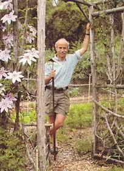
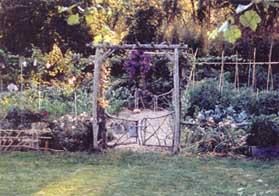
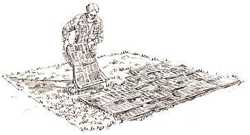
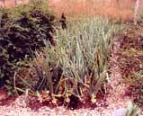

Weedless Gardening
Use this labor-saving, natural weed control system to prevent weeds from overwhelming your garden.
By Lee Reich
August/September 2001
Years ago, I felt nervous every time I went out to weed my garden. I feared I had too few weeds and was worried something must be wrong with my soil. True, I had started some weed-control measures, but it was initially hard to believe they were working so well.
That was about 20 years ago, and over the years I have honed my weedless gardening methods down to four easy principles. My system combines the best of what I’ve observed and tried myself, together with what I’ve read. Besides being a great way to reduce weeding chores, this approach also improves plant and soil health. Here’s how it works.
1. Minimize soil disruption to preserve the soil’s natural layers. This means never turning the soil over by hand or rototiller. Buried within the soil are countless dormant weed seeds just waiting to be awakened by exposure to light or air. Not stirring the soil keeps these seeds asleep. Even when setting transplants, shrubs and trees in the ground, I take care to minimize soil disturbance. I clean up spent plants or large weeds by just jerking them out of the ground, coaxing out those with stout roots by first severing their main roots with a garden knife. I kill small weeds by skimming just beneath the surface with a sharp hoe with a blade that runs parallel to the surface. I enrich the soil from the top down, spreading fertilizers, compost or other organic materials on the surface.
2. Protect the soil surface at all times with some sort of weed-free covering, preferably organic. Just a thin mulch will smother small weed seedlings. The mulch you should choose depends on the look you desire, the plants you’re growing and your soil. Poor soil and hungrier plants demand the most nourishing mulch - grass clippings or compost, for example, in the vegetable garden, while bark or buckwheat hulls are good choices in the flower garden. In some situations living plants (cover crops) offer the needed protection while building soil fertility. (See Weedless Gardening: Mulch Guide for more details.)
3. Prevent soil compaction by avoiding cultivated areas when walking or using wheelbarrows, garden carts and tractors. Most gardeners and farmers till their soils to aerate them, but soils generally need aeration only after they’ve been compacted. You can avoid compaction by using permanently designated, separate areas for plants and traffic. This way you won’t need to till and can avoid bringing up those buried weed seeds. The design of traffic areas (paths or stepping stones, for example) can vary with the design of the garden and the kind of traffic expected.
4. Use drip irrigation whenever regular watering it needed. Drip irrigation pin points the water where it’s needed instead of wastefully watering and encouraging weed growth in paths and unplanted areas.
In addition to fewer weeds, this system has nu merous benefits. The most obvious appeal is dispensing with the annual ritual of turning over soil - no more wrestling a rototiller up and down garden rows. Gone are the repeated thuds of your garden spade coming up against rocks. Forget about needing that “iron back, with a hinge in it,” suggested as the ideal anatomy for a gardener by Charles Dudley Warner in 1870 in My Summer in a Garden. Dispensing with digging also means being able to get plants and seeds into the ground sooner: no need to hold off soil preparation because it's too wet to dig or till.
Leaving soil undisturbed even helps plants quench their thirst when the weather turns dry. Earthworms, roots and the action of freezing and thawing all work together to create interconnected large and small pores in undisturbed soil. Gravity quickly empties large pores of excess water by drawing air in, while smaller, capillary-sized pores hold water against the pull of gravity. As long as the soil is undisturbed and these pores stay intact, water can move within them down, sideways and even up to replace water nearby roots take.
The greatest benefit of not disturbing the soil is the conservation of organic materials, which gradually decompose into humus. Organic materials left on the surface provide a soft landing for raindrops, allowing moisture to soak in rather than run off. Kept on the surface, organic materials also lessen the effects of winter’s cold and summer’s heat and slow water evaporation. Mixing organic materials into the soil or burying them deeply does not let them do their job of protecting the soil surface.
Leaving the soil undisturbed also preserves humus. Digging, rototilling or plowing puts such a shot of oxygen into the soil that microbial activity is stimulated to burn up humus too rapidly. Precious organic matter literally disappears into thin air, most of it becoming carbon dioxide and water vapor.
How Do Plants Like It?
Beans, beets and their bedfellows thrive in soil that has never been turned over or stirred up, yet is perpetually blanketed with compost, grass clippings or other organic mulch.
The humus that builds up in undisturbed soil blanketed with organic mulch provides a rich spectrum of nutrients and other benefits. In addition to plant nutrients released by the humus itself, other humus compounds make mineral nutrient already in the soil more available to plants. Humus keeps the soil loose so oxygen can reach plant roots and helps the soil hold water like a sponge. It even helps plant fight off pests by releasing protective corn pounds and supporting microorganisms that fend off pathogens.
Conventional wisdom would have us mixing humus-rich material deep into the soil “down where the roots are.” However, most plants’ feeder roots, whether of mighty oaks or midget marigolds, actually lie just below the soil surface. There, roots can hobnob with the numerous beneficial soil microorganisms, which thrive where air and organic fuels are most abundant. After all, for millions of years Nature has been creating soils from the top down. Leaf litter drops on the surface of the ground then gradually decomposes to form humus. Old roots, abundant near the surface, similarly decompose and make their contribution to humus. The difference between natural soils, which require hundreds of years to develop, and our gardens is we don’t have to rely only on leaves, stems and roots of resident plants for soil building. We can bring in additional materials, such as grass clippings, leaves, compost, wood chips and manure.
Starting a New Garden Bed
One of the great appeals of weedless gardening is the ease and speed with which you can get plants up and growing. You can prepare the ground (or get your garden back in shape if it has become a sea of weeds) at any time of year. The steps outlined here are applicable to any planting, be it vegetables, flowers, shrubs, vines or trees.
Eliminating existing vegetation. The first step in preparing a garden site is to flatten existing vegetation whether it’s a hayfield, meadow, lawn or weeds, in any way possible. It will be down but not dead. Roots, still alive, will sprout new stems and leaves. Prevent this by smothering the plants beneath a temporary, impenetrable blanket that shades new leaves trying to emerge, eventually starving roots. Paper is the perfect material for this job. It eventually decomposes but is needed for only the short while it takes to kill existing plants. An alternative to newspaper is landscape barrier paper or building paper, such as gray rosin paper, which is undyed and made from recycled newspaper. Any paper will do, but avoid those with colored inks, which sometimes contain unwanted heavy metals.
Spread the paper blanket over the whole planting area. A four-layer thickness of newspaper, or a single layer of landscape barrier paper or building paper, generally does the job, but adjust the number of layers according to how vigorously you expect existing vegetation to resprout. A lush hayfield will need a thicker layer. Make sure to overlap the edges of the paper, or sprouts will wend their way up to the light. As you lay it down, wet the paper to keep it in place.
A suitable mulch will keep your carefully laid paper from blowing away, or curling up and letting weeds peek through. Which mulch you should choose depends on what you’re going to do with a particular area, what you have on hand and how you want the ground to look.
The time to lay beds and paths out is before covering the paper. Use stakes and strings, or a sprinkling of dark soil or compost, to delineate these areas. Once boundaries are marked, an easy way to lay down a crisp, straight line of mulch is by setting an eight- or 10-foot-long 2-by-4 board on edge at one boundary. Apply mulching material right up to and against the board, then move it into position for other boundaries and fill in the middles.
Nutrient-rich compost or grass clippings are the mulches of choice for vegetable beds. You can also use other weed-free, organic materials like straw or leaves.
For your paths, you can choose a permanent mulch such as gravel, flagstone, crushed oyster shells or bricks. Organic materials that work well on paths include wood chips, straw, sawdust, leaves and pine needles. A living option for paths is lawn grass, which you can plant or, if present already, simply leave in place uncovered when you ready the site for planting. Make sure the grass is a noninvasive sort, then keep it mowed and edged. The Mulch Guide summarizes the pros and cons of common mulching materials.
Any organic materials, whether used to cover planting or walking areas, should be applied 1 to 3 inches deep.
Exceptions to Top-Down Beginnings
Although no-till weedless gardening techniques fit every garden situation, there are some sites that may need a thorough, initial digging or rototilling - usually just once. Afterward basic weedless gardening practices apply.
Acid balance. Digging becomes necessary when soil acidity is out of balance. Limestone and sulfur, used to make soil less or more acidic, work their way through the soil slowly. If a quick change in acidity is needed, mix either of these materials into the top 6 to 12 inches of soil.
Rocky beginnings. Where bedrock comes to the surface, construct enclosures a foot or more high, then fill the beds almost to the top with well-drained soil. Do not use a soil too rich in organic matter, or the level will sink as the organic matter oxidizes to produce carbon dioxide and water. Spread 6 cups per 100 square feet of fertilizer containing 5 percent nitrogen on top of the soil. Finally, add organic matter, such as compost, wood chips or straw, on the surface. A 1- to 2-inch layer will do.
Slurpy soil. Overly wet soil is a condition to avoid or correct unless the plan is to grow plants that enjoy it. Abundant clay is one cause for a soil that is too wet. Many clay soils need no special treatment, but there are those so goopy when wet and so rock hard when dry that an initial digging is needed. One way to loosen up a clay soil is to mix in abundant organic matter, such as compost, leaves, sawdust or peat. (Add extra fertilizer with nitrogen-poor materials such as sawdust.) In the West, clay soils sometimes drain poorly because of excess sodium. If a soil test indicates this is the case, thoroughly mix the recommended amounts of gypsum, sulfur or iron sulfate into the top half-foot of soil, then follow with a heavy application of water to leach out the sodium. A soil that stays consistently wet could also be the result of a shallow water table. Remedy this situation by either lowering the water table with ditches or buried, perforated drain pipes or by building raised beds or mounds to bring the roots above water.
Hardpan. A dense layer within the soil through which roots and water penetrate slowly results from traffic, repeated plowing or tillage to the same depth, or may develop naturally in soils where certain minerals or clay particles accumulate. Slow drainage and poor root growth are the main symptoms. Time, night crawlers and deep-rooted plants may eventually break up a hardpan, but a long-bladed spade works, too. Turning the soil over is not as important as just breaking through the hard layer. Once you have broken up the pan, the new environment you create - organic soil amendments, the crops grow and keeping traffic off the surface - should eliminate any need to ever again disrupt the soil.
What About Raised Beds?
Say “garden beds” and most gardeners quickly think: “raised beds.” Except in poorly drained sites, I don’t recommend them. In addition to the effort and soil disruption needed to create and maintain them, raised beds tend to dry out quickly; the higher and narrower they are, the quicker they dry. Then there is the other extreme: sunken beds. They have been used by traditional gardeners in arid regions to capture and conserve water. Soil excavated from beds creates a waffle pattern of walkways across lush, sunken patches of vegetation. In the beds, seedlings and other low-growing plants are spared the full force of drying winds, so they lose less moisture. Rainwater is also channeled into the low-lying beds and contained there until absorbed by the soil.
What About Plastic?
Black plastic sheeting, sold as mulch, appears at first to be a cure-all for weeds, but problems can quickly arise. An impermeable sheet of plastic over the ground can leave plant roots and soil microorganisms gasping for air. Roots of plants set in the openings made in plastic might develop even greater breathing problems when water falling on the plastic is channeled into those openings.
Geotextiles, synthetic fabrics resistant to tearing with many small holes that allow air and water to penetrate the soil, have been offered as an alternative to black plastic. Both black plastic and geotextiles are widely used by farmers, gardeners, and landscapers.
If you don’t like the way these synthetic mulches look, you can cover them. Wood chips are widely used for this purpose.
Geotextiles need a thin cover of something to shade out the minimal light that makes its way though the tiny holes.
But problems arise again. If you cover an area with black plastic or geotextiles and expect to do nothing more, you’ll find that plenty of weeds eventually trot in, their roots growing into that cover of chips. In time, the chips or other covering start to move, exposing the plastic beneath - not a pretty sight!
Furthermore, even if black plastic or geotextiles don't do their jobs forever, they’ll be in the soil that long, or almost so. If you try to make over the landscape in the future, you will be wrestling and cutting geotextiles or collecting scraps of black plastic. Embedding a permanent, synthetic blanket in the ground shows a fundamental disrespect for the soil.
For more details on this labor-saving, soil-building technique, see Lee Reich’s new book, Weedless Gardening.
|
 PHOTO: LEE REICH Veteran gardener Lee Reich has found a sure-fire way to naturally prevent weeds. |
 LEE REICH Weedless gardening is as easy as 1-2-3-4: First, no need to till; second, keep all bare soil mulched; third, maintain dedicated beds and paths to prevent soil compaction; and fourth, use drip irrigation. |
 LEE REICH One of the great appeals of weedless gardening is the ease and speed with which you can get plants up and growing. |
|
 ELAYNE SEARS Newspaper is the perfect material to use to flatten existing vegetation. |
 LEE REICH Onions grow stronger without competition. |
|